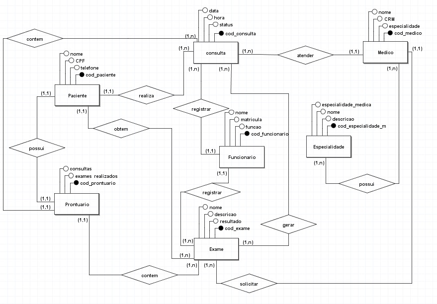
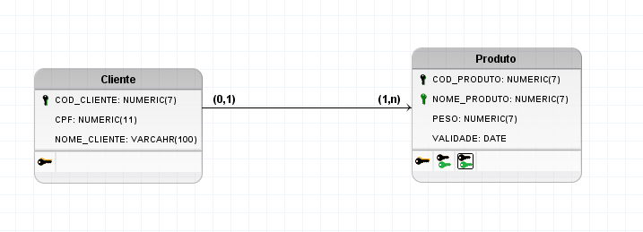

Banco de Dados
O que é um Banco de Dados
Banco de dados são dados organizados de maneira estruturada, armazenados e acessados eletronicamente, facilita o armazenamento e a recuperação rápida de informações, também é fundamental para sistemas que lidam com muitos dados.
Banco de Dados Relacional
Banco de dados relacional organiza as informações em tabelas, possibilitando a criação de relações entre outros conjuntos de dados por meio de chaves primárias e estrangeiras
exs: Oracle, PostgreSQL e MySQL.
Banco de Dados Não Relacional
Bancos de dados não relacional (NoSQL) armazenam dados em formatos diferentes, eles são projetados para escalar horizontalmente, sendo melhores em grandes volumes de dados, exs: grafos (Neo4j), chave-valor (Redis) e bancos de dados baseados em documentos (MongoDB).
O que é um Diagrama Conceitual (DER)
O Diagrama Entidade-Relacionamento (DER) é um modelo visual que serve para mostrar as entidades e relacionamentos dentro do banco de dados.
O que é um Diagrama Lógico (MER)
O Modelo Entidade-Relacionamento (MER) representa o diagrama lógico do banco de dados, detalhando tabelas, colunas, chaves e os tipos de dados que serão usados.
Quais os Bancos de Dados que a Empresa Trabalha?
Atualmente, a empresa trabalha apenas com o banco de dados MySQL, sendo o mais adequado e recomendável para ser usando em sites.
O que é um Dicionário de Dados
O dicionário de dados é um recurso que documenta todas as estruturas e elementos de dados em um banco. Ele inclui descrições de tabelas, campos, tipos de dados e restrições, servindo como referência para desenvolvedores e administradores de banco de dados.